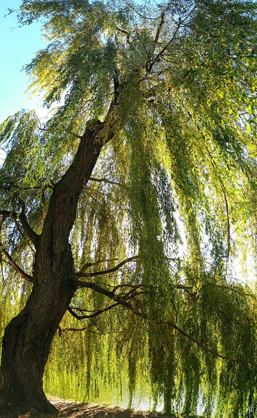
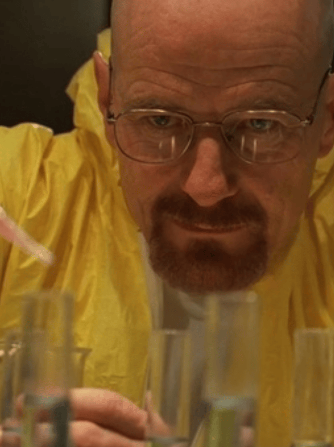

Aspirin
حمض الساليسيليك الأسيتيلي — أكثر الأدوية استخداماً في التاريخ
الأسبرين (Acetylsalicylic Acid) هو مسكن للألم ومضاد للالتهابات وخافض للحرارة، يُصنف ضمن مجموعة الأدوية غير الستيرويدية المضادة للالتهابات (NSAIDs).
يُستخدم الأسبرين لعلاج الآلام الخفيفة إلى المتوسطة، والحد من الحمى، والوقاية من الجلطات الدموية وأمراض القلب والشرايين.

استخدموا لحاء شجرة الصفصاف لتخفيف الآلام والالتهابات
وصف مستحضر من أوراق الصفصاف لمعالجة الحمى وآلام الولادة
العالم الألماني يوهان بوشنر نجح في عزل المادة الفعالة
فيليكس هوفمان من شركة باير صنع حمض الأسيتيل ساليسيليك
شركة باير سجلت العلامة التجارية وبدأ التسويق العالمي
حمض الأسيتيل ساليسيليك — C₉H₈O₄
حلقة عطرية سداسية تُشكّل القاعدة الأساسية للجزيء
مسؤولة عن الخصائص الحمضية للأسبرين
ما يميّز الأسبرين عن حمض الساليسيليك الأصلي
يعمل الأسبرين عن طريق تثبيط إنزيمات الأكسدة الحلقية (COX) المسؤولة عن إنتاج البروستاجلاندين والثرومبوكسان — وهي مواد كيميائية تلعب دوراً محورياً في الالتهاب والألم والحرارة وتخثر الدم.
يثبط الأسبرين نوعين من الإنزيمات: COX-1 الموجود بصورة مستمرة في الصفائح الدموية وبطانة المعدة، وCOX-2 الذي يُفرز استجابة للالتهابات. التثبيط المزدوج هو ما يمنح الأسبرين تأثيراته المتعددة.
ما يجعل الأسبرين فريداً بين جميع مضادات الالتهاب غير الستيرويدية هو أنه مثبط غير قابل للعكس — يرتبط بالإنزيم بشكل تساهمي دائم، مما يعني أن التأثير يستمر حتى يتم تصنيع إنزيمات جديدة تماماً.
💡 النتيجة: تقليل الالتهاب والألم والحمى + منع تجمّع الصفائح الدموية مما يقي من الجلطات
الصداع، آلام الأسنان، آلام العضلات والمفاصل، آلام الدورة الشهرية
علاج الحمى المصاحبة للنزلات ونزلات البرد والعدوى الفيروسية
التهاب المفاصل الروماتويدي، التهاب المفاصل التنكسي، التهابات الجلد
الوقاية الثانوية من النوبات القلبية والسكتات الدماغية بجرعات منخفضة
تقليل خطر الإصابة بالسكتة الدماغية الإقفارية عند المرضى المعرضين للخطر
يُستخدم كعلاج أساسي للأطفال المصابين بهذه المتلازمة الالتهابية
للوقاية من أمراض القلب والشرايين والجلطات الدموية
تسكين الآلام الخفيفة إلى المتوسطة وخفض الحرارة
علاج الروماتيزم والتهاب المفاصل تحت إشراف طبي دقيق
الجرعة القصوى المسموح بها للبالغين هي 4 جرام يومياً. تجاوز هذه الجرعة قد يؤدي إلى تسمم خطير.
تشمل اضطرابات المعدة والغثيان وحرقان المعدة وعسر الهضم، بالإضافة إلى زيادة ميل النزف والكدمات. مع الجرعات العالية قد يظهر طنين في الأذن.
تشمل نزيف المعدة والقرحة الهضمية، ونزيف في الدماغ (نادر الحدوث)، وقصور الكلى أو الكبد في حالات استثنائية.
حالة نادرة لكنها مهددة للحياة تصيب الأطفال والمراهقين. يُمنع تماماً إعطاء الأسبرين للأطفال دون 16 عاماً أثناء الإصابة بالعدوى الفيروسية مثل الجدري المائي والإنفلونزا.
خطر الإصابة بمتلازمة راي
الهيموفيليا ونقص الصفائح الدموية
يزيد من خطر النزف الهضمي
قد يسبب نوبة ربو حادة
يؤثر على النزيف عند الولادة وتطور الجنين
الوارفارين والهيبارين — خطر النزف المزدوج
يُنتج حوالي 40,000 طن من الأسبرين سنوياً حول العالم
يوجد الأسبرين في قائمة الأدوية الأساسية لمنظمة الصحة العالمية
اسم «أسبرين» مشتق من Spirsäure — الاسم الألماني القديم لحمض الساليسيليك
أبحاث حديثة تشير إلى دور محتمل في الوقاية من بعض السرطانات
فيليكس هوفمان صنع الأسبرين أصلاً لأبيه المريض بالتهاب المفاصل
الأسبرين يُستخدم في الطب البيطري أيضاً لعلاج آلام الحيوانات

| الخاصية | الأسبرين | الباراسيتامول | الإيبوبروفين |
|---|---|---|---|
| تسكين الألم | ★★★ | ★★★ | ★★★ |
| خفض الحرارة | ★★★ | ★★★ | ★★★ |
| مضاد للالتهاب | ★★☆ | — | ★★★ |
| مضاد للتخثر | ★★★ | — | — |
| تأثير على المعدة | عالي | منخفض | متوسط |
| الأمان للأطفال | ممنوع | آمن | بحذر |
* التقييمات تقريبية وتختلف حسب الجرعة والحالة الصحية للمريض
Thank You
الأسبرين — حبة صغيرة غيرت وجه الطب الحديث وأثبتت أنها لا تزال تحمل أسراراً كثيرة